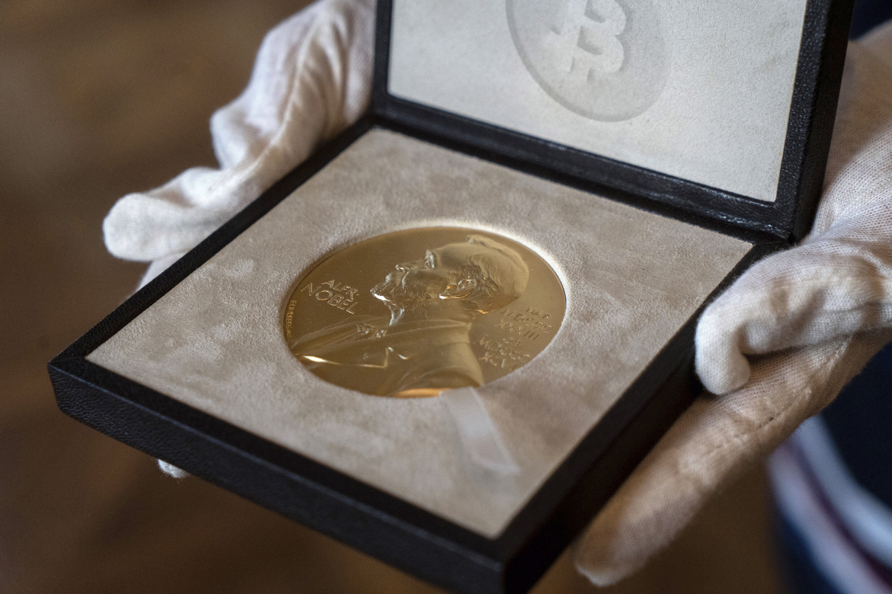
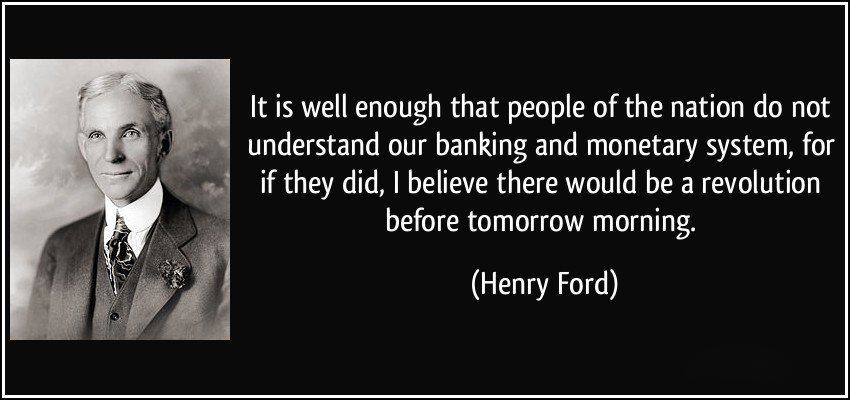

比特幣研究：尋找中本聰系列【十】——中本聰獲諾貝爾獎的意義
特邀作者：祝維沙，知名華人企業家

10.1 中本聰開創了加密經濟學
中本聰獲得諾貝爾獎要符合三項基本條件。
10.1.1 獲獎的基本要求
1. 中本聰公佈真實身份才具備獲獎資格。
巴格万喬德里（Bhagwan Chowdhry）教授提議可把獎金兌換成比特幣打入中本聰比特幣地址的想法，諾貝爾基金會不同意。也就是說中本聰必須現身。
2. 符合諾獎的口味和偏好。
诺贝尔奖偏理论，所有的获奖者都有专著，白皮书作为专著似乎弱了一点。不是创新不够，是描述不足。如何描述好？显然不是问题。这是对比特币社区有好处的事，社区整体智慧表现出的描述能力足以超越诺贝尔奖获奖者。
3. 必須在理論上有開創性的貢獻，在實踐上產生重大影響。
理論貢獻和實踐影響力上，中本聰具備獲得諾貝爾獎的資格。這也是諾貝爾的精神：獎勵為人類做出重大貢獻者！
中本聰可獲哪種諾貝爾獎？加州大學洛杉磯分校的金融學教授巴格万喬德里（Bhagwan Chowdhry） 在赫芬頓郵報（Huffinton Post）上撰文表示，已經提名中本聰為2016 年諾貝爾獎經濟學獎的候選人。麻省理工學院知名人工智能學者萊克斯-弗瑞德曼（Lex Fridman）2021年建議，化名“中本聰”的比特幣創造者應該獲得諾貝爾經濟學獎。教授們認為中本聰適合諾貝爾經濟學獎。這個問題應該沒有異議。
應該如何描述中本聰在經濟理論上的貢獻？這裡拋磚引玉。用中本聰經濟學來描述中本聰的經濟理論成就涉及面太多，概括起來很難。作為經濟學的特色之一，可以用中本聰加密經濟學或密碼經濟學來描述。
10.1.2 加密經濟學的基本內容
加密經濟學在比特幣中佔有一定分量，但不是全部。比特幣不是加密經濟學的派生。是比特幣系統派生了加密經濟學。
加密經濟學是經濟學的一個全新分支。加密經濟學是一門利用密碼學等現代技術的手段去解決經濟問題；用激勵博弈等經濟手段解決技術問題的學問。由於加密的存在，大大減少了交易之間的信用。為此中本聰描述了機器信任。由於太過創新，開創者擔心遭遇與當年布魯諾、伽利略相似的禍端，而選擇了匿名。
它的新奇之處在於，信任是通過機器來完成的。
1. 通過機器程序規則和驗證來實現信任過程。
2. 產生博弈，共識勝者取得記賬權並獲得獎勵。
3. 形成信任結果的鍊式記錄。
4. 所有參與信任過程的機器保存信任結果。
5. 任何人都有資格參與，所有人都有資格查看鍊式記錄。
機器信任取代對第三方的信任，俗稱是去中心化的信任，換句話說是對傳統金融中介的不信任。人們對於比特幣系統的信任就是機器信任，是對於其底層的技術程序以及算力的信任，包含對底層程序團隊和參與計算的算力團隊的信任。相信作惡節點收益小於誠實收益。有了人的參與就有了風險因子，就有了不同團隊和共識方式的差別，就需要有評價標準。總結中本聰機器信任標準可概括為6條：
1. 信任的人越少越好，
2. 信任環節越少越好，
3. 信任的環節越安全越好，
4. 信任經歷過的時間越長越好，即信用要時間積累，
5. 不控制用戶數據，
6. 賬本公開透明不可篡改。
如解釋，需要很多文字，讀者可以看看WEB3.0無鏈金融平台白皮書（1）。
總之：通過加密經濟學機器信任，建立起不作惡或不能作惡的貨幣發行機制和系統。
10.2 用密碼學等技術解決金融問題
下面的解釋對應加密經濟學定義第一句話：加密經濟學是利用密碼學等現代技術的手段去解決經濟問題。這裡的金融問題是指貨幣發行，特指比特幣發行。
比特幣利用加密技術手段，採用分佈式共識的方法，公平地進行資產型貨幣的發行。這一切都不要人為的信用背書。注意：比特幣不是空氣幣是資產幣，即使在比特幣沒有價格的“空氣”階段，開採比特幣也是有成本的。成本是價值轉換所必需，說比特幣是空氣幣是完全錯誤的認知。有這個想法的人沒有搞清楚資產價值和使用價值評價標準的區別。對此我們後面會詳細介紹。
10.2.1 法幣超發難題
比特幣的發行方法是貨幣歷史上的一個重大創新。比特幣的出現，開始終結在電子時代無資產發行空氣幣的惡性，法幣雖不完全是空氣，也是基於很少的資產，主要靠信用發行。不同國家貨幣的“空氣”程度不同。央行通過法幣機制調控經濟，以便維持經濟發展。實踐證明央行無法用數學的手段合理調控貨幣供給，所有的貨幣理論都無法保證調控效果，圍繞信用幣發行產生的各種理論統統無效，幾乎成為一切經濟危機的源頭。中本聰在創世區塊中的一句話“英國財政大臣正在準備第二次救助的邊緣”，說得很明白，法幣不救助就會崩潰。比特幣就是為了解決信用幣無信用引起經濟危機的問題。
基於法幣的全球貨幣大規模超發，政府、銀行、金融機構具有法定的獨占優勢，越來越多的人將法幣置換成股票、房地產、黃金和比特幣等避險資產。投資者、房地產商、與資本離得近的人，在一次次泡沫中佔盡優勢分食貨幣紅利。這種資產持有不產生稅收，在美國是股票，在中國是房產，造成法幣流通的不平衡。改變這種不平衡的最簡單的方法就是超發貨幣。超發引起貶值，變相掠奪僅靠勞動獲取財富的工薪族，擴大貧富差距，製造經濟危機，引起政府無節制的新超發，以便延緩社會危機的爆發。也造就了金融企業這個怪胎，成了吞吃社會財富的寄生蟲。一個明顯的例子是，根據熊焱2012年的文章：“中國2500家上市公司的利潤總和的一半被16家上市銀行收穫。”（2）這是一個很老的數據，現在的情況更為嚴重。金融泡沫化，引發金融動盪，動盪就是機會，投機容易獲取財富的觀點削弱了長期持有資產和通過勞動獲取穩定回報的觀點。引起年輕人專職和兼職進行金融炒作，降低了該人所從事主業的生產效率，減少有效勞動人口和通貨膨脹，進一步引起金融和實體經濟的失衡。失衡就要調整，金融市場大幅震盪，加劇了投機獲利的機會，所產生的投機利潤進一步推高物價，又產生貨幣貶值的預期，促使人們迅速地將手上的錢花出去，個人消費能力是有限的，又會進一步投機，最終影響社會的信仰基石。
區塊鏈有趣的實驗，向人們展示了各種空氣幣的發行狀況以及明顯的危害，這種種危害在法幣身上都有。法幣如果沒有資產背書就是空氣幣，而空氣幣是萬惡之源。這一點通過人類社會實驗室——區塊鏈得到充分證實。亨利福特說過：“如果人民一下子頓悟我們現有的銀行和貨幣系統，那麼明天也許就會有一場革命。”（3）現有的法幣系統只是歷史長河的一種臨時措施，一定會被替代。
現代貨幣發行理論是貨幣發行和經濟增長相對應，適度的超發有利於經濟增長。這個度很難把握，只有靠泡沫破裂產生價值回歸。但是價值回歸往往負向超調，迫使控制者再次打方向，又引起新的超調，經濟危機周而復始。適度增發到底是破壞力大還是增長力大？作為短期策略可以考慮，作為長期策略一定是錯的。對於因素簡單的系統，控制容易; 對於因素多的系統是不確定的，不可控的。所以適度超發的“度”，就是不可實現的胡說八道。不確定係統遵循自然成長規律，每一次改變都對未來產生影響。影響的後果短期是投機效應，長期就被融入到自然成長中。
12.2.2 用加密技術手段避免法幣作惡，實現比特幣本位
本文的第12節將詳細的介紹如何實現比特幣本位。這裡是概括性觀點，用以說明用技術手段解決經濟問題。
比特幣的出現，使得現代人類的生產和創造與貨幣發行，形成自然對應的可能，也就是回歸數字黃金本位的時代的可能，人人可以發幣，無資產不能發幣，應該是未來的共識。
比特幣利用軟件協議公平的生產和記錄不可篡改的貨幣，挑戰政府發幣不受控的問題，讓人們看到實現“數字黃金”本位的可能性。這是經濟學的根本問題。經濟學家從米塞斯哈耶克開始只是看到問題，但是沒有解決方案。而中本聰提出了解決方案。可惜諾貝爾經濟學獎沒有獎勵方案的傳統。
比特幣利用加密等技術手段創造出比黃金特性更好的“數字黃金”。比特幣是超主權貨幣，貨幣穩定性不會受主權的差異性的影響，後面我們講述如何實現“數字黃金”本位，即比特幣本位，為解決法幣不能解決的經濟難題提供了可能性。
10.3 用經濟手段解決自動發幣的難題
下面的解釋對應定義第二句話：用激勵博弈等經濟的手段解決技術問題。
比特幣用經濟的手段即激勵和博弈的辦法解決技術難題。比如解決了拜占庭將軍問題。該問題提出者是萊斯利蘭波特（Leslie Lamport），分佈式系統的先驅和奠基人之一，2013年的圖靈獎獲得者。而當時對這個問題，體現最高水平的解決方案是PBFT（實用拜占庭容錯Practical Byzantine Fault Tolerance），作者之一是芭芭拉·利斯科夫（Barbara Liskov），2008年的圖靈獎獲得者，而PBFT只能在很小的網絡中運行。中本聰用了一個非常簡單的辦法比肩和超越圖靈獎得主們的算法。其實這是最長鏈問題。如何保證作惡鏈不超過誠實鏈，有數學專家證明過中本聰的方法在數學上不完備，中本聰成功純屬運氣。其實中本聰說：“只要誠實節點集體控制著比任何一組合謀攻擊節點更多的CPU算力，系統就是安全的。（4）當作惡的收益小於誠實的收益，人們選擇不作惡。數學家沒有算出數學後面的人性。經濟學是研究人性的，也是研究選擇性的。數學公式中沒有人性，一旦數學公式中出現了人性參數，意味參數不定公式沒有意義。
中本聰的13年挖礦證明，考慮激勵規則的系統是可以自動運行的，而且更有效率。維持比特幣系統核心程序的開發人員不過十多個人。中本聰的比特幣系統除了他本人之外，沒有一分錢外部投資，自己當了兩年客服，一個複雜的技術系統一直自動運轉。自動系統不稀奇，但是分佈式的按規則自動運行的系統從未有過。這些問題的解決就是經濟手段。最終形成的比特幣系統是對所有參與人都公平的系統：公平激勵，形成技術不能解決的自發次序；在機器規則下的自發參與、自動運行、自主治理、自我實現。這是一個納什均衡。非合作方博弈是一種納什均衡方法，但是比特幣不是策略選擇型納什均衡，是概率型納什均衡，就此一點寫出論文就是諾貝爾獎的水平。
10.4 加密經濟學在比特幣系統上所取得的成果
加密經濟學解決了什麼問題：
1.隱私存錢的創新
將密碼學公鑰私鑰技術應用於私人賬戶的建立，使得人們可以匿名擁有賬戶，抗審查，誰也不能隨意操縱和凍結你的賬戶。對應比特幣地址賬戶，擁有唯一私鑰的人，可以控制和動用存放在地址中的資產。在加密貨幣中比特幣採用UTXO未花賬戶模式，不採用UTXO賬戶模式的區塊鏈項目，都達不到比特幣的隱私保護程度。缺點是私鑰丟了資產就損失了。這個缺點是加密貨幣必改的一大痛點。隱私保護成為Web3的起源，什麼是Web3同樣可參考文獻（1）。
2.財富創造和交換的創新。
比特幣的每筆交易既透明又匿名。總賬透明，全球用戶可自由查看，具體地址賬戶是匿名的，一般人無法確定比特幣地址賬戶的歸屬。比特幣讓自己的地址賬戶裡的財產處於不可侵犯、不可凍結和不可追踪的狀態。自己的財富自己掌握，無需銀行保管，無需信任第三方。是點對點的交易，並且沒有雙重支付，清算和結算一體，是比特幣總賬設計的創新。
3.需求預期決定比特幣價格的創新
比特幣的創造過程是競爭性的，需要時間、能源和其他有形成本的投入。減半週期和線性鑄幣，產生了明確的縮量預期，同時還有總量限制。黃金的開採量是不可預知的，黃金價格的上升必然導致開採量的加大，從而產生價格的回落。這是成本和需求共同決定價格的模式。由於比特幣是線性鑄幣，價格上升不能導致開採量的加大，只能導致算力加大，算力加大導致稀缺性的進一步上升，算力加大推高挖礦成本，算力成本構成了價格的護城河。護城河特徵驅動護城河需求，形成上升的螺旋。比特幣是需求決定而不是成本決定，這是和黃金極大的不同，是比特幣對標黃金後的創新。細想還有什麼資產是唯一由需求預期推動的，還有什麼資產沒有價格天花板？黃金、法幣、證券都不是。空氣幣是，但是它不是資產。市場之上還有一種東西具有這個特性，是需求推動並且沒有價格頂，和比特幣的特性非常接近，就差了“預期”這個詞。那就是經濟增長。經濟增長是需求推動，經濟增長沒有頂，兩者多麼般配。我腦子不好用，此外再也沒有想出來還有什麼具有這種特性？
這裡的疑問是為什麼是4年減半，為什麼是減半而不是其他的縮量辦法。有人說4年減半和美國的大選4年對應，政府運行複雜得多，涉及方方面面。比特幣很簡單，就是電腦的換代周期，根據摩爾定律18個月芯片容量翻倍，兩年的更新換代足夠了。如果是兩年周期並減少鑄幣量，可能幣價上漲更快。當然中本聰對硬件不太熟，沒有想到SAIC礦機的出現。
4. 通貨膨脹的可預測的創新
比特幣到2140年成長周期結束便不再通脹，成為貨幣標準秤，成為商品的標價。比特幣的P2P分佈式特性與去中心化的設計結構，至少在理論上排除了任何機構操控比特幣供給總量的可能性。在成為商品標價之前，比特幣還要把小數點向右移動幾次。
創立貨幣標準秤對人類的貢獻有多大？一定符合諾貝爾的精神：獎勵為人類做出重大貢獻者！
10.5 加密經濟學不能概括的比特幣系統特色
比特幣遠比加密經濟學內容豐富，部分內容也很有特色。
1. 共識是自由不是民主
比特幣不存在多數人暴政——即民主投票。因為它的設計中不包含任何強迫。多數人不能強迫少數人，少數人也不能強迫多數人。意見不合就造一個分叉幣。無法通過投票要求比特幣按照多數意願去發展。協商一致達成共識是解決問題的辦法，這與貨幣的本質十分貼切。貨幣的自然演化是共識的形成過程。一旦形成不應輕易人為破壞。強人如沒有民主機制制衡很容易形成獨裁。中本聰通過消失，踐行了共識機制。沒有領袖，沒有央行，靠自然的演化，這是比特幣的一大特色。社區和共識機制應該有新的關係，應該有製衡關係才對。純自然演化似乎和自然銷售一樣，在沒有競爭對手，或競爭對手很弱的情況下都可行。目前沒有對手出現，並不意味未來沒有對手。關於民主和自由的討論，是屬於技術還是屬於經濟？似乎不是加密經濟學所能概括的。
2. 開源的力量
比特幣是一個開源項目，沒有公司運營，只有發明人沒有負責人，沒有試圖剝削任何人，也沒有融資。沒有侵害任何人的利益。在一個講法制的社會，即使當局恨得牙癢癢，也很難將中本聰扔進監獄。今天就更不可能了。此處忍不住讚歎中本聰的高明和謹慎。
開源讓全世界的開發者都有權對比特幣更新作貢獻。比特幣改進提案（BIP）由此產生。
BIP是一種設計文檔，主要為全網帶來新的功能或信息。由於比特幣的開源本質以及其係統中不存在中央機構，比特幣社區希望開發者使用BIP作為交流媒介和互換信息的主要方式。比特幣網絡第一個BIP0001是由阿米爾塔基（Amir Taaki）提交的。主要內容都是關於BIP的，包括BIP的定義以及如何將BIP和比特幣核心（Bitcoin Core）的客戶端相結合。並由盧克達什（Luke Dash）在BIP 0002 中對其進行了擴展和替代。
開源，形成BIP，形成社區機制，進行自然的演化，這就是社區的力量。一個人的代碼就可征服世界，沒有廣告費用，沒有市場團隊，這在公司製之下是不能想像的。社區的提案機制是比特幣最偉大的機制創造之一。比特幣社區是中本聰創造的，他創造了環境，而後來的演化是社區的力量的創造。從現在社區的運行結果來看，無論技術社區和比特幣論壇都很落伍，趕上時代好還是維持現狀好？都有道理。從我的角度是希望改進。
3. 創造三位一體的自治組織形式
社區的力量來源於中本聰的機制設計。程序開發者，礦工和持幣者利益一致，沒有公司的邊界，形成社區。社區的共性是以幣為紐帶，行動是自願的，貢獻是自願的。要說如果有團隊，是維護比特幣的，叫比特幣核心（Core）開發組，市場佔有率96%以上。這個團隊是一個鬆散組織，負責志願者上傳代碼的審核。，從發展來看，使用幣作為社區紐帶還有進一步改進的空間。在依靠眾多用戶發展的應用場景下，社區機制戰勝公司是一定的，這就是未來。
比特幣告訴了我們如何實現躺贏。中本聰躺贏了。但是早期的開發者不一定能像中本聰那樣拿得住比特幣。因為自然進化，沒有人做市場的組織宣傳，共識達成得慢。躺贏是由於生產效率提高，公司製度解體必然出現的社會現象。如何實現躺贏是另一個題目。中本聰給我們揭示了未來的走向，和正確地躺贏方法。他不賣，你不賣，就是中本聰水平。
4.比特幣系統的理論基礎
比特幣在設計時延續了密碼朋克的思路和傳統，如果硬要有個學派，類似於奧地利學派，那就是密碼朋克派。作為比特幣本身用到的基礎理論有：博弈論、概率論、控制論、密碼學、數學、貨幣學、哲學、計算機編程和數據庫技術、P2P網絡技術。
密碼學中又包括:公鑰私鑰密碼技術、加密簽名、哈希函數、交易哈希鏈、默克樹、時間戳和SHA256加密算法等。
經濟學內容十分廣泛，包括：博弈論、概率論、控制論和貨幣學。其他的學科都說不上創造，只有經濟學有很多匪夷所思的創新。
10.6 他打開了潘多拉魔盒
回顧諾貝爾經濟學獎得主的貢獻，與他們相比較，中本聰是宗師級的貢獻。是達爾文，愛因斯坦，牛頓級別的貢獻。幾百年來有無數的貨幣誕生和消亡，比特幣是幾百年來貨幣領域最偉大的創新。“中本聰匯集了各種現有的概念，創造出這一強大的技術，使貨幣系統的概念發生徹底的變革。他打開了一個潘多拉魔盒，大批精英工作在比特幣系統之上，基於這套準則改變其他體系。........。比特幣的主要影響是允許世界人民重新思考貨幣應該如何發揮作用。它為人類開啟了一扇通向新的貨幣體系的大門，一次電子復興。”（5）
這一段話非常深刻是《中本聰文集》譯文版的結束總結。新的貨幣體係是什麼？我們必須思考在新的貨幣體系中比特幣應該扮演的角色。中本聰加密經濟學的特色就是講究方案實現。接下來的三節就是我們的實現方案。
中本聰是加密經濟學的創立者，開創了人類用機器實現全球通用的貨幣發行和機器自動公平分配貨幣的方法。加密經濟學是中本聰的獲獎理由。但是加密經濟學不能夠概括中本聰的所有思想。中本聰獲獎對他本人和比特幣社區都是重大利好。諾獎委員會支持他獲獎更能展現其真實的價值。問題是他本人必須能聯繫得上，必須出面。對此要解決的問題還很多，要做到順理成章才行。本節就是其中的一個節點，我們需要補上一塊塊共識。以黃金作為共識標準來看，比特幣還不是全球共識，可能許多人說我不懂，那就看完我下一節再說。
結論：
中本聰：男，時年33-34歲，神童，美國人，住西海岸，是密碼朋克。不缺錢。自由職業者。在已過世的中本聰懷疑對象名單中沒有中本聰。他具有卓越的編程能力和產品設計能力以及對社區的理解力。命好，有一個好金主兼謀士。中本聰對金融有深刻的認識。受奧地利經濟學派影響。哲學上傾向自然進化，喜歡自由自在的生活。是加密經濟學的創立者。
參考文獻
1. Web3.0 Chainless Financial Platform White Paper
Hong Kong Yuxing Technology Company (8005)
2. 金融業擠占了產業的資源和利潤
熊焰 2012年10月30日 14:48
有數據表明，今年上半年，中國2500家上市公司的利潤總和的一半被16家上市銀行收穫。有一個比較，中美的前十家企業的總利潤的比較，中國前10家大企業中有四家銀行，它們佔有了整個前十家利潤的63%，而美國前十家大型企業中，只有兩家是金融機構，它們的利潤只佔了這十家的17%。作為一個社會部門，銀行金融機構是否創造價值，這有爭論，咱們拋開不談，但是以銀行為代表的金融部門，過多地擠占了社會稀缺的資源，過多的享有了利潤，這個應該是一個大家都承認的事實。與去年類似的論壇上，有個銀行家講到利潤多到不好意思談，也有政府官員大聲疾呼，全中國人民都給銀行打工，這個局面到了該調整的時候了。
3. 福特之百年預言：一種基於能源的貨幣形式
翻譯自“Cointelegraph”的博客

4. Bitcoin: A Peer-to-Peer Electronic Cash System
Satoshi Nakamoto
5. 區塊鏈啟示錄：中本聰文集
（美）菲爾·尚帕涅（Phil Champagne）
譯者：陳斌胡繁
書號：9787111609247